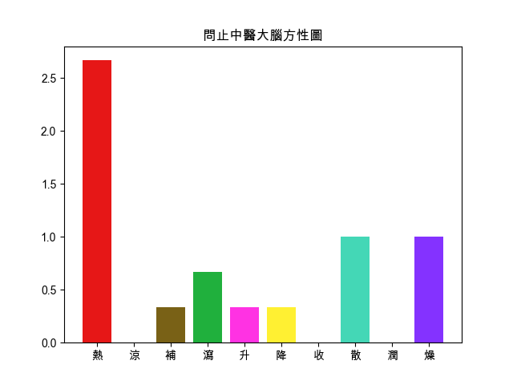

回上頁
【麻黃附子細辛湯】
出處
傷寒論
功用
助陽解表。
應用
陽虛外感表寒證。惡寒較重，發熱，但欲寐，無汗，舌淡脈沉者。
組成
● 麻黃 : 發汗解表，宣肺平喘，利水消腫
● 炮附子 : 回陽救逆，助陽補火，散寒止痛
● 細辛 : 祛風解表，散寒止痛，溫肺化飲，通竅
氣喘
鼻淵_鼻炎_鼻竇炎
偏頭痛
咽炎
陽虛身冷調養方劑
【組成方劑的單味藥藥性表】
-
溫熱藥
平藥
寒涼藥
補藥
炮附子☀
平藥
瀉藥
麻黃☀ ,細辛☀
-
升性藥
平藥
降性藥
散性藥
麻黃☀
細辛☀
平藥
收性藥
炮附子☀
